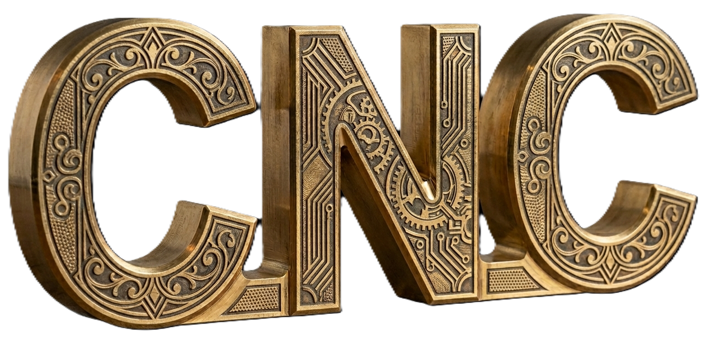
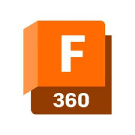
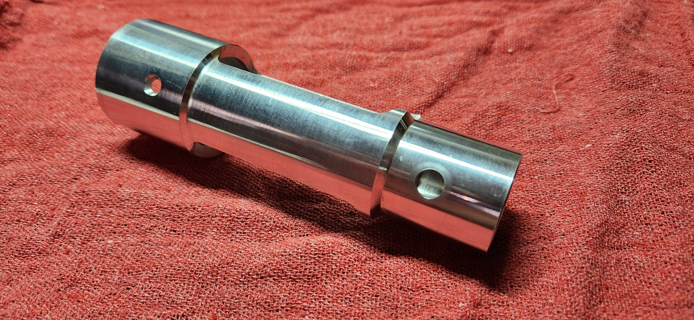

G&M Code Development
This is the "DNA" of the machining process. While CAM software generates the bulk of it, custom-optimized G-code ensures the machine runs at peak efficiency.
Optimization: Reducing "air cutting" time and optimizing tool paths to shave seconds (or minutes) off cycle times. Macro Programming: Implementing G65 subprograms or Fanuc-style macros for repetitive tasks, probing cycles, or part families. Error Reduction: Cleaning up "bloated" code that can cause older controllers to lag or stutter during high-speed look-ahead operations.
Custom Setup Sheets
A shop is only as fast as its changeover. Professional setup sheets bridge the gap between the programmer and the operator.
Visual Clarity: Including 3D screenshots of the part orientation, fixture locations, and "Work Offset" ($G54, G55$, etc.) origins.Tooling Data: Explicit lists of tool projections, flutes, holder types, and specific stick-out lengths to prevent spindle crashes.Quality Control: Integrating critical dimension check-points directly into the workflow so the operator knows exactly what to mic after the first
Custom Post Processors
The Post Processor is the translator between your CAM software (like the BobCAD-CAM shown in your screenshot) and your specific CNC machine hardware.
Machine-Specific Syntax: Tailoring code for unique controllers (Haas, Mazak, Heidenhain, etc.) so you don't have to "hand-edit" code after posting.Multi-Axis Support: Correctly handling 4th and 5th axis rotary logic, including Inverse Time Feed ($G93$) and Tool Center Point Control (TCPC).Safety Blocks: Forcing specific safety codes at every tool change to ensure the machine is in the correct state (e.g., $G80$ to cancel canned cycles or $G90$ for absolute positioning).